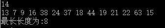

介绍
动态规划(简称DP)是算法设计思想当中最难也是最有趣的部分了，动态规划适用于有重叠子问题和最优子结构性质的问题，是一种在数学、计算机科学和经济学中经常使用的，通过把原问题分解为相对简单的子问题的方式求解复杂问题的方法。使用动态规划方法解题有较高的时间效率，关键在于它减少了很多不必要的计算和重复计算的部分
它的思想就是把一个大的问题进行拆分，细分成一个个小的子问题，且能够从这些小的子问题的解当中推导出原问题的解。同时还需要满足以下两个重要性质才能进行动态规划
最优子结构性: 既所拆分的子问题的解是最优解。
子问题重叠性质: 既在求解的过程当中，每次产生的子问题并不总是新问题，有些子问题会被重复计算多次。动态规划算法正是利用了这种子问题的重叠性质，对每一个子问题只计算一次，然后将其计算结果保存在一个表格中，当再次需要计算已经计算过的子问题时，只是在表格中简单地查看一下结果，从而获得较高的解题效率
举个栗子
首先先引一道动态规划的经典问题最长不下降子序列
它的定义是: 设有由n个不相同的整数组成的数列b[n],若有下标$i_1<i_2<···<i_L$ 且 $b[i_1]<b[i_2]<···<b[i_L]$
则称存在一个长度为L的不下降序列。
例如
13,7,9,16,38,24,37,18,44,19,21,22,63,15
那么就有13<16<38<44<63长度为5的不下降子序列。
但是经过观察实际上还有7<9<16<18<19<21<22<63长度为8的不下降子序列，那么是否还有更长的不下降子序列呢？请找出最长的不下降子序列
输入格式
第一行为n，表示n个数(n<=100000),第二行为n个数的数值(数字之间用空格隔开且最后一个数字末尾不能留有空格)
输出格式
一个整数，表示最长不下降子序列的长度。
输入例子
4
1 3 1 2
输出例子
2
思路
假如要求得某一段的最优，就要想更小段的最优怎么求，再看看由最小段的最优能否扩大推广到最大段的最优;
假设这么一个表:
| 序列下标 | 1 | 2 | 3 | 4 | 5 | 6 | 7 | 8 | 9 | 10 | 11 | 12 | 13 | 14 |
|---|---|---|---|---|---|---|---|---|---|---|---|---|---|---|
| 序列数值 | 13 | 7 | 9 | 16 | 38 | 24 | 37 | 18 | 44 | 19 | 21 | 22 | 63 | 15 |
| 序列长度 | 1 | 1 | 1 | 1 | 1 | 1 | 1 | 1 | 1 | 1 | 1 | 1 | 1 | 1 |
| 链接位置 | 0 | 0 | 0 | 0 | 0 | 0 | 0 | 0 | 0 | 0 | 0 | 0 | 0 | 0 |
第三行表示该序列元素的所能连接的最长不下降子序列的长度，因为本身长度为1，所以初始值都为1.
第四行表示链接于哪个序列元素形成最长不下降子序列
先从倒数第二项63算起，在它的后面仅有一项，因此仅作一次比较，因为63>15，所以从63出发，不作任何链接，长度还是为1。
再看倒数第三项22，在它的后面有2项，因此必须要在这2项当中找出比22大，长度又是最长的数值作为链接，由于只有22<63,所以修改22的长度为2，即自身长度加上所链接数值的长度，并修改链接位置为13，也就是63的下标。
再看倒数第四项21，在它的后面有3项，因此必须要在这3项当中找出比21大，长度又是最长的数值作为链接(注意:是长度)，很容易看出，数值22满足该条件，因此，修改21的长度为3，并修改链接位置为12，即22的序列下标。
依次类推，最后结果如下表:
| 序列下标 | 1 | 2 | 3 | 4 | 5 | 6 | 7 | 8 | 9 | 10 | 11 | 12 | 13 | 14 |
|---|---|---|---|---|---|---|---|---|---|---|---|---|---|---|
| 序列数值 | 13 | 7 | 9 | 16 | 38 | 24 | 37 | 18 | 44 | 19 | 21 | 22 | 63 | 15 |
| 序列长度 | 7 | 8 | 7 | 6 | 3 | 4 | 3 | 5 | 2 | 4 | 3 | 2 | 1 | 1 |
| 链接位置 | 4 | 3 | 4 | 8 | 9 | 7 | 9 | 10 | 13 | 11 | 12 | 13 | 0 | 0 |
最终状态的转移方程式为: $f(i) = max {f(j)} +1 (b_j<b_i 且 i<j)$.时间复杂度为$O(n^2)$
代码
|
|
示例
